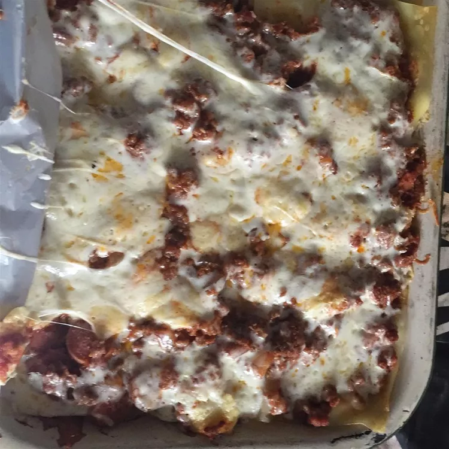

Lasagne
Ingrédients
- 500g de viande hachée
- 1 oignon
- 2 gousses d'ail
- 400g de tomates concassées
- 200g de sauce béchamel
- 12 feuilles de lasagne
- 100g de fromage râpé
Préparation
- Préchauffez le four à 180°C.
- Faites revenir l'oignon et l'ail hachés dans une poêle avec un peu d'huile d'olive.
- Ajoutez la viande hachée et faites cuire jusqu'à ce qu'elle soit bien dorée.
- Incorporez les tomates concassées, salez, poivrez et laissez mijoter pendant 15 minutes.
- Dans un plat à gratin, étalez une couche de sauce à la viande, puis une couche de feuilles de lasagne, une couche de béchamel et répétez l'opération jusqu'à épuisement des ingrédients.
- Terminez par une couche de béchamel et saupoudrez de fromage râpé.